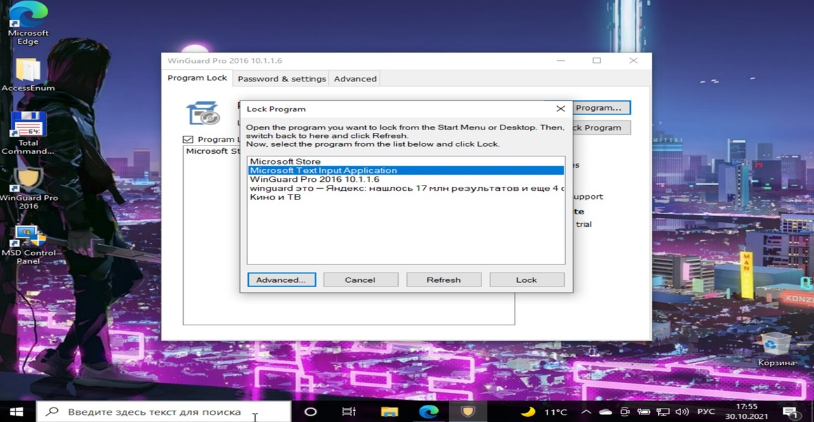
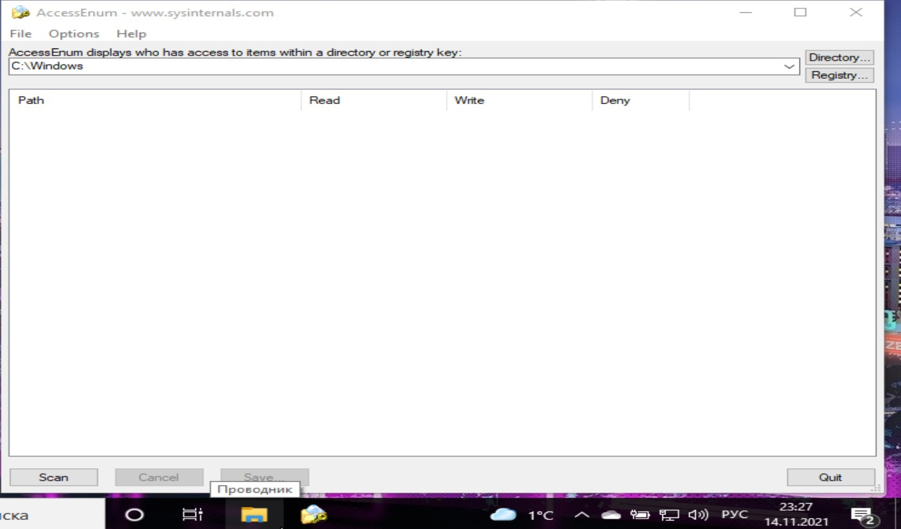
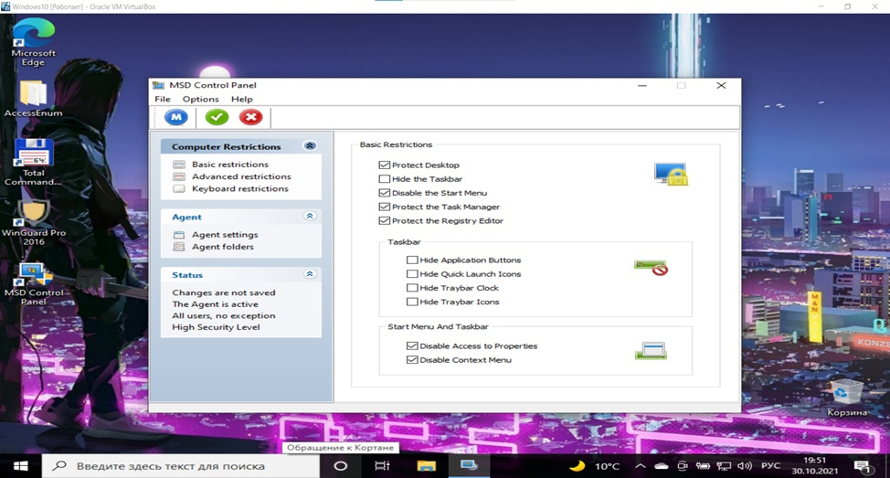

Средства ограничения доступа к ВС и её отдельным составляющим

WinGuard – это программа, позволяющая защитить паролем доступ к
различным функциям ОС Windows и программам, включая Internet Explorer, диспетчер задач, Этот Компьютер, Панель управления,
Media Player, папки командной строки и многое другое. Всякий раз, когда пользователю пытается получить доступ к
защищенному приложению, ему предлагается ввести пароль администратора.
Функции WinGuard:
Утилита позволяет ограничить доступ к выбранной программе, путем добавления пароля при
последующем запуске программы, а сама программа попадает в список Lock Program.
(этот процесс происходит в головном меню Lock Program)
В данном меню для ограничения доступа к программе у пользователя есть два варианта:
Первый – выбрать любую из программ, которая предложена утилитой.
Второй - через кнопку «Advanced» задать в поле нужную существующую программу
и выбрать именно её для ограничения к ней доступа.
В результате надо будет перезагрузить систему и запустить заблокированную программу.
Пользователю придется ввести пароль, который был задан в программе WinGuard, чтобы продолжить работать с ней.
В головном меню во вкладке «Password and settings» можно установить новый пароль,
а также задать вопрос для восстановления пароля и ответ на него.
В головном меню во вкладке «Advanced» у пользователя есть возможность ограничить доступ к
Файловой системе, Административным инструментам, ограничить запись на USB-накопители, ограничить доступ к диспетчеру задач,
ограничить доступ к установщикам ПО, а также имеется возможность спрятать все накопители (для доступа к ним,
как и ко всему ограниченному, нужно ввести пароль).
Плюсы программы WinGuard:
- Можно установить/снять ограничение доступа к любой программе (системной и несистемной);
- Есть возможность создавать, менять и восстанавливать пароли для ограничения доступа.
Минусы программы WinGuard:
- Ограниченное время для ввода пароля для снятия ограничения доступа;
- Программа небесплатная (дается пробный период 30 дней).
Вывод:
WinGuard – утилита, которая выполняет свою задачу в ограничении доступа к системным или прикладным программам.
С помощью неё пользователь сможет задать свой пароль для ограничения доступа к программам, а также в любой момент его поменять,
ну а самое главное – это ограничение доступа любой программы на компьютере.
Единственное, что огорчает – это то, что программа платная, поэтому не каждый сможет ее себе позволить,
но у всех есть возможность попробовать её в течение 30 дней.

AccessEnum - это утилита, которая позволяет создать отчет о доступе пользователей к реестру и файлам.
Воспользовавшись этой программой, системный администратор сможет найти уязвимости в выданных правах.
Удобство утилиты состоит в том, что она позволяет проверить файлы, а также доступ к веткам реестра.
Функции AccessEnum:
С помощью кнопки Scan пользователь/администратор сможет узнать кто обладает и какими
правами доступа к файлам. Это позволит понять администратору или пользователю к каким файлам стоит ограничить доступ,
а к каким наоборот предоставить.
Кроме того, программа предоставляет возможность сохранить отчет по сканированию файлов и сравнить
его с новым, что делает программу очень удобной, и, если права доступа были даны кому-то по ошибке, это даст возможность вернуться
назад и скорректировать доступ к файлам.
Плюсы программы AccessEnum:
- Бесплатная;
- Позволяет делать отчеты по правам доступа к тем или иным файлам;
- Программа позволяет сохранять отчеты и сравнивать их с ранее сделанными.
Минусы программы AccessEnum:
- Нет возможности управлять доступом к файлам.
Вывод: программа AccessEnum за несколько секунд создает
детальный отчет по параметрам безопасности файловой системы и реестра, что позволяет искать «дыры» в системе безопасности
и определять кому выдано слишком много прав доступа. Также программа бесплатная и позволяет сравнивать
результаты отчетов сканирования файловой системы и реестра с более ранними отчетами по параметрам безопасности.

My Simple Desktop 2.0 — программа для ограничения доступа к компьютеру и его настройкам.
Она представлена в трех редакциях: платных My Simple Desktop Office Edition
и My Simple Desktop School Edition и бесплатной My Simple Desktop Home Edition.
Функции My Simple Desktop 2.0:
С помощью данной утилиты можно легко защитить от изменений рабочий стол, панель задач и меню «Пуск»,
запретить внесение изменений в настройки дисплея и контекстного меню проводника, а также запретить доступ к панели управления,
свойствам папок, системному реестру, заблокировать использование горячих клавиш Windows и правой кнопки мыши.
В плане ограничения доступа к устройствам предусмотрен запрет на использование жестких дисков и внешних
USB-устройств, а также скрытие сетевых дисков и блокирование автопроигрывания компакт-дисков. При необходимости можно установить ограничение
на время использования компьютера — одинаковое для всех пользователей, за исключением администратора.
Настройка ограничений производится путем назначения одного из предустановленных профилей либо вручную.
Плюсы программы My Simple Desktop 2.0:
- Существует бесплатная версия для домашнего использования (My Simple Desktop Home Edition);
- Позволяет защитить от изменений рабочий стол, панель задач и меню «Пуск», контекстное меню проводника;
- Можно заблокировать использование пользователем горячих клавиш Windows и правой кнопки мыши;
- Предусмотрен запрет на использование жестких дисков и внешних USB-устройств, сетевых дисков и компакт-дисков;
- Можно установить ограничение на время использования компьютера.
Минусы программы My Simple Desktop 2.0:
Вывод: программа My Simple Desktop 2.0 - простая в использовании,
позволяет администратору защитить компьютер от нежелательных пользователей.
Посторонние люди не смогут редактировать рабочий стол, панель задач, контекстное меню, также можно отключить
использование ими горячих клавиш, использование правой кнопки мыши, запретить использование USB-устройств и сетевых дисков.
К тому же эту утилиту можно скачать для домашнего использования бесплатно.
Общий Вывод по программам:
из всех трех рассмотренных программ по ограничению доступа к ВС я бы выбрал именно My Simple Desktop 2.0.
В отличие от WinGuard она бесплатная и может ограничивать не только доступ к прикладным программам, но и к использованию
USB-устройств и сетевых дисков, запретить использование горячих клавиш и использование правой кнопки мыши.
По сравнению с AccessEnum она не может составлять детальный отчет о параметрах безопасности файловой системы,
но может ограничивать доступ почти ко всему, что AccessEnum не может сделать.